Computer Vision III (IN2375) — Notes 4: Modern Approaches
This note covers the last three lectures.
First we introduce transformers by extending the idea from correlation layer we met in video object segmentation already compares features against features, which is exactly what attention generalises. From there we develop self-attention and positional encoding, scale up to the ViT and Swin Transformer backbones, and we see how transformers reshape the traditional computer vision tasks. DETR casts detection as set prediction, MaskFormer and Mask2Former unify segmentation as mask classification.
Second, we see unsupervised (self-supervised) learning in three categories: 1. solve the pretext tasks (rotation, jigsaw puzzles, colorization, SSL on videos), 2. extend of metric learning to unsupervised contrastive learning (SimCLR, MoCo), and non-contrastive methods (DINO and its successors, masked autoencoders)， plus how SSL models are evaluated and what they enable downstream, from semantic segmentation to segmentation from motion cues and the contrastive random walk.
Third, semi-supervised learning: starting from the semi-supervised loss and its three assumptions (smoothness,low density, manifold), we see how to get expansive data and organise the field along two taxonomies — from unsupervised preprocessing and self-training (OnAVOS, SAM and its successors, pseudo-labels) to intrinsically semi-supervised methods (entropy minimisation, virtual adversarial training), learning from synthetic data with domain alignment, and consistency regularisation.
1. Transformers
1.1 Motivation: From correlation layers to attention
CNN encode的是local context：每一层卷积只看kernel覆盖的邻域，receptive field 随着网络深度单调增长,那么我们就想到可以用卷积来聚合long-range的context, 但是这带来几个问题：
- 想要long-range的context aggregation就必须堆深度，但深度越大越难训练
- receptive field是由每层固定的kernel size决定的，这本身是一种inductive bias （认为图片信息集中在局部邻域），所以网络只能关注设计好的区域
- 我们希望在同一层内就有显式的non-local feature interactions
那么：可不可以让网络自己学习它的receptive field？
在回答这个问题之前，我们先回顾一下convlution和correlation layer
Recap：卷积其实就是矩阵乘法（im2col）。做法是把每个local patch flatten 成列， 和拉平的filter做dot product：

而在video object segmentation里我们已经见过correlation layer：把两个feature map 拉平，两两做dot product得到相似度矩阵 \(s_{ij} = f_i^\top f_j\) 值得注意的是 在correlation layer的计算中是fixed operation，没有可学习的权重：

既然卷积是"feature和固定filter做dot product"，correlation是 "feature和feature做dot product"，那么我们想：如果先得到每个位置的feature （这些feature可以由convolution提取local context），然后让每个位置和所有其他 位置的feature做correlation，得到相似度，再用这些相似度加权聚合（weighted aggregation）其他位置的feature，这就是最朴素的self-attention思想。
那么把correlation layer的思路总结起来。我们为了得到相似度，先用来自第一个 feature map的一个input vector \(x_i\) 与来自第二个feature map的input vector \(x_j\) 做dot product，得到一个scalar（标量），这一步被称作feature matching。 这个scalar \(w'_{ij}\) 表示了 \(i\) 和 \(j\) 的相似度（在 note 3我们解释了为什么向量的dot (inner) product 代表相似度）。虽然向量点乘是对称的（\(x_1^\top x_2\) 和 \(x_2^\top x_1\) 是同一个 scalar），但是矩阵行列顺序会有变化，所以matching score矩阵代表F1对F2的相似度。
在attention中，我们希望用这个相似度作为权重（归一化处理后）再乘上F2的矩阵 用于聚合信息（aggregate the information），相当于对F2进行加权求和，表示F1 关注了F2的哪些信息，这就是最simple的attention；当两份feature来自同一个 input（F1 = F2）时，就是simple self-attention。
但把这种simple self-attention用到text上就暴露了问题。比如句子 "this restaurant was not too terrible"：

"not"直接影响"terrible"的含义，我们希望dot product \(x_{not}^\top x_{terrible}\) 很大， 但是simple self-attention里没有任何可学习的参数，所以这种关系学不到 （Problem: How do I learn this?）。解决的直觉是给每个token配上可学习的线性映射， 把同一个token投影成不同的"角色"再做dot product，这就引出了Q、K、V。
1.2 Attention and self-attention
从1.1得知，我们如果想让F1关注聚合F2，需要一个来自F1的向量和一个来自F2的向量复制两份。 那么如果我们希望input可以关注聚合自己的信息呢？那么同样的我们就需要复制三份，所以 每个input vector同时扮演三个角色：
- query：拿去和别人比较（"我在找什么"）
- key：被别人比较（"我是什么"）
- value：比较完之后被取走的内容（"我能提供什么"）
在1.1的simple self-attention里，三个角色都是同一个 \(x\)：
（\(w_{ij}\) 是原始分数 \(w'_{ij}\) 沿 \(j\) 做softmax归一化后的权重，下同。）
现在引入trainable weights and biases，让每个角色有自己的投影：
其中 \(q = Qx + b\)（\(k\)、\(v\) 同理）。1.1结尾"怎么学"的答案就在这些投影矩阵里。
顺带一提：还可以在权重矩阵上强加结构来引入inductive bias。比如autoregressive text：模型不能偷看后面的词，就只对 \(j \le i\) 的token求和 \(y_i = \sum_{j \le i} w_{ij} x_j\)，写成矩阵形式就是给 \(W\) 套一个下三角mask。
把上面这套写成矩阵形式、标清维度，就是Attention的正式定义。给定：
- query矩阵 \(Q \in \mathbb{R}^{S \times n}\)：当前元素（比如当前这个词）
- key矩阵 \(K \in \mathbb{R}^{T \times n}\)：被比较的元素
- value矩阵 \(V \in \mathbb{R}^{T \times m}\)：比较的权重对应取出的内容
QUIZ为什么要除以scaling factor \(\sqrt{n}\)？
假设 \(q_i, k_i \sim \mathcal{N}(0,1)\)，那么 \(q^\top k = \sum_{i=1}^{n} q_i k_i\) 的 方差约为 \(n\)，标准差约 \(\sqrt{n}\)。所以n越大，进softmax的数值就越大，softmax饱和后 梯度消失（vanishing gradient）。除以 \(\sqrt{n}\) 就是把量级拉回来，因此叫 scaled dot-product attention。
QUIZ输出的维度是多少？
\(\mathbb{R}^{S \times m}\)，也就是"for every query we fetch the corresponding value"： S个query，每个query取回一个m维的value加权和。
Self-attention就是Q、K、V全部来自同一个输入。输入 \(X \in \mathbb{R}^{T \times d}\) （T个d维token），定义4个可学习的线性映射 \(W^Q, W^K \in \mathbb{R}^{d \times n}\)、\(W^V \in \mathbb{R}^{d \times m}\)、 \(W^O \in \mathbb{R}^{m \times d}\)：
输入 \([T \times d]\)、输出 \([T \times d]\)，可以像卷积层一样堆叠成深层网络。 完整的计算流程（对第三个元素算attention value）：

复杂度：需要算 \(T \times T\) 的pairwise相似度矩阵，所以memory是 \(O(T^2)\)、 runtime是 \(O(T^2 n)\)，对token数量是二次的。这个伏笔在Swin那里回收。

Multi-head attention：一个softmax就是一个attention head。把feature维度切给 Z个head、各自做attention再concatenate（过 \(W^O\) 投影回d维）：

- 条件：Q、K、V的feature维度要能被head数整除
- Z个head让一个query最多取回Z种不同的value，建模更复杂的token间关系
- 复杂度不增加，因为可以并行，实际wall time反而更快
Normalisation：两个标准改进（Vaswani et al., 2017）： residual connection（把原始token feature加回去）+ layer normalisation（Ba et al., 2016， 每个token feature对自己的均值方差归一化）：
但还剩一个根本问题：整套计算里没有位置信息。self-attention对token是 permutation-equivariant的：把输入顺序打乱，每个query取回的value完全不变。 "猫咬狗"和"狗咬猫"在它眼里一样，这显然不行。
1.3 Positional encoding
在原始论文里，解决办法是给每个token index 配一个唯一的位置向量（PE矩阵的一行），和input embedding逐元素相加：

- PE引入了spatial affinity的概念（句子里两个词的距离、图片里两个patch的距离）， 打破了permutation invariance
- 可以是学出来的（positional embedding）或固定的（positional encoding）， 绝对或相对位置都行。原论文用固定的sinusoidal编码：
- PE和token同维度（\(1 \times d_{model}\)），所以可以直接相加
- sinusoidal对在feature的不同维度随着position的变换展现出不同的频率，如上图 右侧热力图，不同维度对应不同频率（低维快、高维慢），用频率的快慢编码了 绝对位置。同时又具有非常好的相对位置性质：\(PE(k+r) = M(r)\, PE(k)\)， 其中 \(M(r)\) 是一个块对角的旋转矩阵，推导如下
把feature维度两两一组看，第 \(i\) 组的频率记为 \(\omega_i = 10000^{-2i/d_{model}}\)，位置 \(k\) 在这一组上的编码就是一个二维向量：
对任意偏移 \(r\)，用三角函数的和角公式展开：
写成矩阵形式：
关键在于 \(M_i(r)\) 只依赖偏移 \(r\) 和频率 \(\omega_i\)，完全不依赖绝对位置 \(k\)。 把 \(d_{model}/2\) 个组拼起来，就得到 \(PE(k+r) = M(r)\, PE(k)\)，\(M(r)\) 是由这些 \(2\times 2\) 旋转块组成的块对角矩阵。
这个性质为什么好？因为"差 \(r\) 个位置"对PE来说是一个固定的线性变换， 所以网络想学"关注前面第 \(r\) 个token"这类相对关系时，不需要管自己在哪个 绝对位置。再看两个PE的点积：
结果只和 \(r\) 有关，也就是说attention的相似度天然能感知相对距离。 这个"位置差 = 旋转"的思想后来被RoPE（rotary position embedding） 直接发扬光大，如今的大语言模型基本都在用它的后代。
Self-attention recap：
- 非常versatile：任意token数；head数、feature维度都是design choice
- 计算量对token数二次增长（pairwise相似度矩阵）
- 本身permutation-equivariant，绝对/相对位置靠PE补上
Transformer交互式可视化：Transformer Explainer。
1.4 ViT
那么transformer能不能搬到视觉上？ Dosovitskiy et al., 2020 的 ViT (Vision Transformer)给出了肯定答案：在classification上和CNN有竞争力， 思路是把图片切成patch序列，几乎不改NLP的Transformer：

做法是： 1. 把图片切成固定大小的patch 2. 每个patch过一个全连接层linearly embed成token 3. 额外接一个可学习的[class] token 4. 加上positional embedding 5. 喂给标准Transformer encoder 6. 最后只取[class] token的输出，过一个MLP head做分类
实验结论：
- ViT只有在超大数据集（JFT，300M张图）上预训练才好，因为它 没有CNN的inductive bias：locality（self-attention是全局的）、 2D邻域结构（位置关系通过学习得到）、translation invariance
- 但很重要的是：vision可以和language共用一套computational framework：transformer
1.5 Swin Transformer
ViT的问题：

为什么ViT没法很好的scale? 有以下原因 - self-attention复杂度是 \(O((HW)^2 C)\)，对图片分辨率二次爆炸 - 所有层的token数量不变；而CNN是逐层降分辨率的（省计算、扩receptive field）， ViT享受不到这个好处
Swin Transformer（Shifted Window） Swin Transformer用了三个设计解决，把复杂度降到线性：
① Window attention（解决二次复杂度）：取代对全图做self-attention, 只在固定大小 \(M \times M\) 的 local window内做self-attention。每个window内是 \(O(M^4 C)\)，全图 \(O(HW \cdot M^2 C)\)。因为M是常数，所以总复杂度是 \(O(HWC)\)，对分辨率线性。
② Shifted windows（解决window割裂全局context）：naive的固定window会让 context不再是全局的，因为相邻window之间永远不交流。解决办法是相邻两层交替偏移 window的划分，让上一层不同window里的feature在下一层进到同一个window：

这样任意分辨率下feature都能逐层聚合全局context。
③ Patch merging（引入层级/hierarchy）：像CNN一样逐stage降分辨率。做法是把 \(2 \times 2\) 的C维patch拼接成4C维，再线性投影到2C维：分辨率减半、通道翻倍， 得到 \(\frac{H}{4} \times \frac{W}{4} \times C \to \frac{H}{32} \times \frac{W}{32} \times 8C\) 的层级式backbone，输出和ResNet等标准backbone兼容，可以直接接 detection/segmentation的下游头：

结果：

- 比ViT和不少CNN更快更准（还用着更低的输入分辨率），更有意义的是不需要大数据集预训练
- ImageNet-1K到22K的scalability要更好
Summary：Swin把CNN的inductive bias（locality、hierarchy）和Transformer调和到了 一起；classification / detection / semantic segmentation全面SOTA；线性复杂度； 证明了Transformer是全能的视觉backbone。ICCV '21 best paper。
1.6 DETR
那么Transformer能不能直接做detection任务？ 我们知道object detection本质是set prediction，我们并不关心bounding box的输出顺序。而Transformer恰好擅长处理 set，所以自然可以让transformer来做set prediction任务： （DETR, Carion et al., 2020）

Overview像上图所示。 - CNN backbone 提取 2D feature map，也就是图片每个区域的 local feature embedding，并加上 positional encoding - Transformer encoder-decoder 接收这些 feature；decoder 使用一组固定数量的 learnable object queries，并行地产生固定数量的 object predictions。每个 prediction 同时输出 class + bounding box - 训练时使用Hungarian bipartite matching，在 predictions 和 ground-truth objects 之间寻找一对一的最优匹配，再对匹配结果计算 classification loss 和 bounding-box loss - 不需要 NMS。因为 Hungarian matching + set prediction 训练方式会鼓励模型对一个真实物体只产生一个 prediction。没有匹配到真实物体的 query 被训练成特殊的 “no-object” class；推理时将 no-object / 置信度很低的 predictions 丢弃即可
A closer look：

- CNN backbone 提取的2D feature经过拉平、加positional encoding后进Transformer encoder（self-attention）
- Transformer decoder 输入固定数量的learnable object queries（可学习的positional encoding）， query之间先做self-attention，再通过cross-attention从encoder feature中检索与各自相关的object information
- 每个query的输出embedding经过共享的classification head和box regression head，预测一个object detection（class + normalized box），或者no-object

架构和Vaswani et al., 2017非常接近。
但是什么样的Loss才可以学习 因为模型输出的是无序的set，N个query各吐出一个预测，没有任何顺序信息，我们不知道哪个预测该和哪个ground truth box配对。配对错了，loss就惩罚一个其实预测得不错的query、奖励一个预测得差的，导致模型学习collapse, 因此算loss之前必须先解决GT和预测的assignment问题。那么我们从之前note 2想到了用Hungarian matching的方法。
为什么用Hungarian matching呢？ 我们需要的是prediction和GT之间代价最小的 一一对应，loss需要综合分类置信度和box的接近程度。这正是经典的bipartite matching问题，Hungarian算法可以在多项式时间内给出最优解，在note 2的MOT里我们已经用过它做data association。匹配好之后，每对之间正常算分类loss和box loss，没匹配到GT的query学"no object"类。
完整的loss（Hungarian loss）：
- \(\hat{\sigma}\)：Hungarian matching算出的optimal assignment in the first step， \(\hat{\sigma}(i)\) 就是分配给第 \(i\) 个GT的那个prediction
- \(-\log \hat{p}_{\hat{\sigma}(i)}(c_i)\)：classification loss，即该prediction 给真实类别 \(c_i\) 的概率取负对数。注意GT集合里补了empty（\(\varnothing\)，no object）， 因为query数N远多于真实物体数，配不到GT的query在这一项里学 \(\varnothing\) 类
- \(\mathbb{1}_{\{c_i \neq \varnothing\}}\)：指示函数，只有真实物体才算box loss， 因为 \(\varnothing\) 类没有box可回归
- \(\mathcal{L}_{\text{box}}\)：bounding box loss，展开是L1和GIoU的组合：
- \(\|b_i - \hat{b}_{\sigma(i)}\|_1\)：L1项关心的是box参数差了多少 （center/width/height的数值距离）
- \(\mathcal{L}_{\text{iou}}\)：generalised IoU项，关心的是overlap的质量
- \(\lambda_{\text{iou}}, \lambda_{\text{L1}}\)：两个超参，平衡两项
为什么同时需要L1和GIoU呢？因为L1单独用有坑：它的惩罚和IoU脱节， L1相同的预测，IoU可以差很多：

为什么是GIoU而不是用IoU呢？因为两个box完全不重叠时IoU恒为0，无论错得多 离谱梯度都是0（vanishing gradient）。所以我们需要GIoU （Rezatofighi et al., 2019）：
其中C是同时包住prediction和GT的最小convex hull。不重叠时GIoU由包络框里的 "空隙"决定（可以到-1），预测越远惩罚越大，梯度不再消失：

结果：encoder的self-attention就能把instance分开：

Summary：架构（相对）简单、检测准确、不需要NMS，小改动就能做panoptic segmentation。但是DETR还有以下问题：计算和显存开销大（尤其显存）、收敛慢训练久，后来的 Deformable DETR（ICLR 2021）解决了这两点。
1.7 MaskFormer
那么transformer能不能用于semantic和panoptic segmentation？
Recall: Panoptic FCN（note 3）：Panoptic FCN已经是一个统一semantic和panoptic的模型， idea是为每个thing/stuff生成一组kernel，拿kernel去和encoded feature做卷积， 每个kernel"印"出一张mask。MaskFormer从这里得到的idea是： 这些kernel不用hand-crafted生成机制，直接用Transformer的learnable queries算出来 （Cheng et al., 2021）。

架构有以下三个模块：
- Pixel-level module：backbone提取image features \(\mathcal{F}\)， pixel decoder上采样得到per-pixel embeddings \(\mathcal{E}_{pixel} \in \mathbb{R}^{C_e \times H \times W}\)
- Transformer module：transformer decoder拿着N个learnable queries 对image features做cross-attention，每个query输出一个segment embedding
- Segmentation module：每个query的embedding过MLP分出两路，一路预测 class（K+1类，含"no object"，接classification loss），一路变成 mask embedding \(e_{mask,i} \in \mathbb{R}^{C_e}\)。第i个mask就是它和 per-pixel embedding的dot product：
也就是说每个query对应一对(class, binary mask)，这个视角叫mask classification：不再像FCN那样对每个pixel做分类（per-pixel classification）， 而是预测一个(类别, 掩码)对的set。训练同样用Hungarian matching配对， mask接binary mask loss。semantic segmentation的inference只需把class概率和 mask做矩阵乘、丢掉"no object"即可，所以一个模型统一了semantic和panoptic。
但是MaskFormer还有以下问题：它几乎原样继承了DETR的训练机制，所以也继承了DETR的毛病：
- cross-attention是全局的：每个query一开始要在整张feature map上"漫游"， 很久才学会聚焦到自己负责的物体上，所以收敛慢、训练贵（300 epochs起步）
- 单尺度：transformer decoder只看backbone最后一层的低分辨率特征， 小物体和精细边界很差
- mask loss在全分辨率的mask上算，显存开销大
- 结果上最致命的：instance segmentation明显不行。用Mask2Former论文里的 对比数字（COCO/ADE20K）：
| 任务 | 当时的专用SOTA | MaskFormer | Mask2Former |
|---|---|---|---|
| Panoptic (PQ) | 51.1 (Max-DeepLab) | 52.7 | 57.8 |
| Instance (AP) | 49.5 (Swin-HTC++) | 40.1 | 50.1 |
| Semantic (mIoU) | 57.0 (BEiT) | 55.6 | 57.7 |
MaskFormer的panoptic和semantic都不错，但instance比专用模型低了整整9个点， "transformer统一segmentation任务"的说法当时还站不住。
1.8 Mask2Former

为了解决上面这些问题， Mask2Former对MaskFormer做了三处关键改动：

改动① Masked attention（最核心）。idea是把cross-attention约束在当前query 对应的前景区域内。对比标准attention：
其中 \(\mathbf{M}_{l-1}\) 是上一层预测的mask二值化的结果：mask内的位置加0 （正常参与attention），mask外加 \(-\infty\)（softmax后权重为0，等于被剪掉）。 这样query不再全图漫游，只在和自己高度相关的context里取信息，收敛快非常多。
这个设计过程本身有两个问题要解决：一是第一层还没有mask可用， 解决办法是用初始query \(\mathbf{X}_0\) 先预测一个粗mask来启动；二是mask预测 错了attention会被锁死在错误区域，解决办法是每一层都重新预测mask， 逐层修正，错误不会一路传下去。另外decoder块里把self-attention挪到了 masked attention之后，让query先从图像取到信息、再互相交流。
改动② 多尺度特征。pixel decoder输出多个分辨率的feature，轮流（round-robin） 喂给连续的decoder层，因为将高分辨率传递进去，所以小物体有信息被传递。
改动③ 训练效率。mask loss不再在全图上算，而是学note 3里PointRend的思路， 只在K个importance-sampled的点上算，显存降到约1/3。
结果：三个任务同时超过各自的专用SOTA（对比数字见上表），真正做到了 "一个架构通吃segmentation"。而且注意一个概念上的变化：模型里再也没有 things/stuff的区分，这些概念被queries抽象掉了。

Mask2Former还有什么问题：
- segmentation不同颗粒度的transformer架构统一了，但每个任务仍要单独训练一个模型（semantic/instance/panoptic 三份权重），后来的OneFormer解决了这个问题
- 小物体虽有改善，仍是短板；显存和算力开销依然不小
- masked attention依赖mask质量，早期层mask差时会浪费一部分容量
1.9 Conclusions and what came after
结论：Transformer作为序列式模型，先在NLP方面发挥作用，然后通过ViT和DETR把 冲击带进了视觉。作为CNN的补充，它在classification、detection、tracking、 image generation上都达到了SOTA。但这些成绩往往是用更大的 算力预算换来的，GPU更大、训练更久。
下面把tranditional computer vision tasks:detection、segmentation和tracking在transformer架构上的主线从课件里的经典transformer架构至今理清。
Detection / Segmentation：
- 2020，DETR：开创set prediction范式。 问题：收敛极慢（500 epochs）、小物体差
- 2021，Deformable DETR：attention不再看全图， 每个query只在reference point周围采样少数几个点，天然支持多尺度。 收敛快10倍、小物体明显改善。问题：query还是黑盒，训练前期匹配仍不稳
- 2022，DAB-DETR：把query显式建模成 动态anchor box（x, y, w, h），逐层refine，query从此可解释。 问题：Hungarian matching本身的不稳定还没解决，同一个GT在不同epoch 会被分给不同query，监督信号来回跳
- 2022，DN-DETR：正面解决匹配不稳定。 训练时额外喂一批加噪的GT box让decoder学去噪，这部分不走matching， 给模型稳定的监督。收敛再提速
- 2022，DINO（detection的DINO，和第2章 SSL的DINO重名但是两回事）：contrastive denoising + mixed query selection， DETR系首次登顶COCO榜，宣告这条路线全面成熟
- 2022，Mask DINO：把detection和 segmentation统一进同一个DETR框架，两边互相涨点
- 2022，OneFormer：解决Mask2Former "一任务一份权重"的问题，用task token做条件，一次训练同时拿下三个 segmentation任务
- 2023，Co-DETR：指出one-to-one matching 的监督信号太稀疏（一张图几十个GT，几百个query大部分学∅），训练时加 one-to-many的辅助分支增稠监督，COCO再创新高
- 2023，RT-DETR：DETR系一直上不了实时赛道， RT-DETR用高效hybrid encoder + IoU-aware query selection，首次在实时检测上 打赢YOLO系，而且天生NMS-free，部署链路更干净
- 2024，D-FINE：把box回归重新定义成 逐层细化的分布预测（不再直接回归坐标），实时精度继续涨
- 2024–2025，DEIM：matching带来的收敛慢 问题仍在，DEIM用改进的稠密匹配监督进一步加速收敛（CVPR 2025）
- 2026（CVPR）：这条线还在细化。 PaQ-DETR继续打磨query设计， 学一组共享的latent pattern、按图动态生成query，说明"query该长什么样" 到2026年仍是open question； Revisiting Real-Time DETR 指出DEIM和D-FINE都在改decoder和训练目标，转头重新设计encoder的效率； 分割侧的ViT-P干脆不再动预训练的ViT， 用一个免预训练的point-based适配头在frozen backbone上做universal segmentation（ADE20K 54.0 PQ），呼应了"backbone来自第2章的预训练、 任务头越来越轻"的大趋势
Tracking（回忆note 2的分类：online只能看当前和过去帧、边看边出 结果，offline拿到整段视频后全局优化）：
- 2021，TransTrack（online）：最早把DETR 搬进MOT的尝试之一，两个decoder分别做detect和track，特征跨帧传递。 问题：本质还是"检测+关联"两步，端到端得不彻底
- 2022，TrackFormer（online）：提出 track query，每个已有轨迹用一个query在下一帧里"续命"，新目标由普通 object query发现，检测和跟踪同一个decoder完成，Hungarian matching只在 新生目标上做。问题：query之间抢容量，遮挡后re-ID弱
- 2022，MOTR（online）：把端到端做到最彻底， track query自回归地跨帧传播，连关联规则都不要了。问题：跟踪学好了， 检测明显掉点，detect query和track query互相打架
- 2022，GTR（offline/近线，clip级）：一次吃 一段clip，在窗口内用transformer做全局关联，是offline思想在transformer 时代的直接翻版
- 2022，ByteTrack（online，非transformer）： 一盆冷水式的reality check：不用任何端到端花活，强检测器 + Kalman + 低分框二次关联就在MOT17/20上吊打了当时所有端到端方法。结论和note 2 的直觉一致：MOT的第一要素仍是检测质量
- 2023，MOTRv2（online）：接受现实， 用YOLOX的proposal给MOTR补检测短板，端到端路线追回一城
- 2023，SUSHI（offline）：note 2里MPN那条 graph路线的正统续作（同一个组的工作），用层级图统一短时和长时关联， 证明offline图方法在长遮挡场景仍然最强
- 2024，MOTIP（online）：换个角度， 把association干脆建模成ID prediction，给每个目标直接预测身份编号， 简化了整个端到端管线
- 2026（CVPR）：matching策略仍在演化，比如 ProgTrack（online） 用progressive matching做无人机视角的MOT，小目标加剧烈相机运动的场景 依旧是难点
单目标跟踪（SOT）同样被transformer重写，代表作 STARK和 MixFormer（SOT按定义都是online）， 思路都是把template和search region丢进同一个attention里做关系建模， 正好是note 2里GOTURN"比较两帧"思想的attention版。
到2026年：detection task实时赛道基本是RT-DETR/D-FINE/DEIM这条DETR系路线和YOLO系并立；segmentationn task mask classification已经成为默认范式，query-based的通用架构（Mask2Former、OneFormer、Mask DINO这条线）取代了per-pixel和per-task的专用模型，问题依然是小物体和细边界、视频分割的时序一致性，以及实时化，因为这套架构至今仍然又大又慢；promptable和open-vocabulary的分割（SAM那条线）依赖大规模预训练，属于后面章节的话题会在后面章节描述。跟踪上，端到端（tracking-by-attention）和 tracking-by-detection之争还没有定论，检测器的强弱仍然主导benchmark， 长遮挡下offline图方法保持优势。matching的稳定性、小物体、以及开放词汇 检测（open-vocabulary）仍然是open problems。
2. Unsupervised (self-supervised) learning
2.1 Motivation: learning without labels
In traditional standard paradigm, we use supervised learning, give the image or video as input and output a prediction, compare it with annotation. BUT: fine annotation data is very expansive, 而互联网上Real image data without label is everywhere. 所以我们想learning eithout labels. 但是Can we hope to learn anything useful from the unlabelled data?以及什么是一个useful的output? 答案是学习compact yet descriptive的representation。
用信息论看这件事。记数据为 \(X\)、representation为 \(Z\)、（未来下游任务的） 标签为 \(Y\)，理想的目标是：
- \(I(X;Z)\) 要最小化：\(Z\) 对 \(X\) 压缩得越狠越好（compact）
- \(I(Z;Y)\) 要最大化：\(Z\) 里要保住和 \(Y\) 有关的信息（descriptive）
- Recap互信息(mutual Information)：\(I(X;Y) = H(X) - H(X \mid Y)\)，即观察到 \(Y\) 之后 \(X\) 的熵少了多少bit；\(H(X \mid Y)\) 是知道 \(Y\) 后 \(X\) 剩下的熵
最优的 \(Z^*\) 叫minimal sufficient statistic：刚好够用、一点不多。
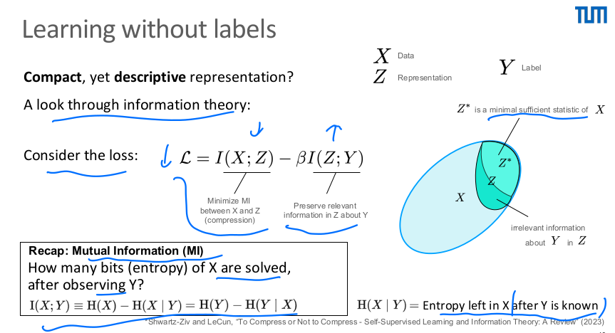
Quiz: \(X\) 是{Cat, Dog, Parrot, Chicken}的图片，\(Y\) 是类别标签，\(Z\) = 腿的数量， 这个representation怎么样？
压缩性极好（一张图压成一个数字），但是压过头了：猫和狗都是4条腿、 鹦鹉和鸡都是2条腿，\(Z\) 里丢掉了区分 \(Y\) 所需的信息，\(I(Z;Y)\) 太小。 好的representation要在两项之间平衡。
理想图景：无标签数据训练一个模型，输出通用的representation， 下游每个任务只需要接一个浅层的head（比如线性分类器）：
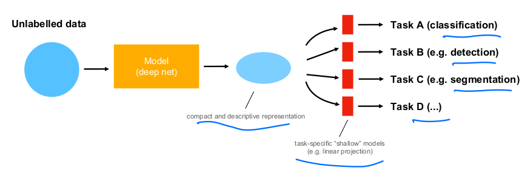
理想情况下embedding是线性可分的，那么只要很少的标注数据训练一个 linear probe就能分类。这就是SSL的价值主张：representation学好了， 下游只需要很少的标签。
新的问题是怎么在没标签时定义训练目标？Goal: 设计一个和目标任务有某种关联的 training objective，希望模型在它上面训练时顺便学到对目标任务有用的东西。 我们把unsupervised learning的goal分成三类：pretext tasks、contrastive learning、 non-contrastive learning。
2.2 Pretext tasks
第一波的思路：人为设计一个"借口任务"，标签从数据自动生成。
Rotation（Gidaris et al., 2018）： 把图片旋转0°/90°/180°/270°，网络做4分类猜转了多少：
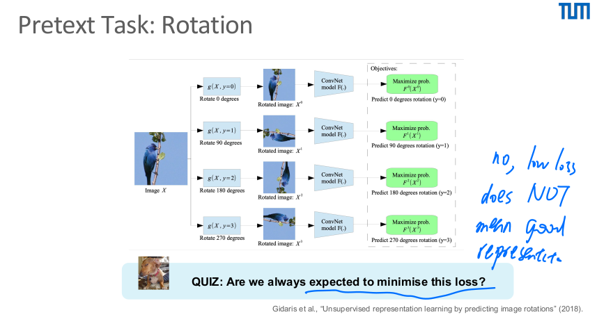
QUIZ我们总是希望这个loss越低越好吗？
不是。pretext loss低不代表representation好，模型可能靠捷径把任务做好了 但什么语义都没学到。这个任务的前提是数据集有photographic bias： 拍出来的物体有主流朝向（天在上、地在下），判断旋转才需要理解物体。 如果物体没有canonical pose，旋转角度就没有意义，比如卫星图。一个思想实验： 把所有旋转过的图片也加进原数据集，旋转标签直接变得不可定义。
Jigsaw puzzle（Noroozi & Favaro, 2016）： 切成3×3的patch打乱，让网络恢复空间关系：
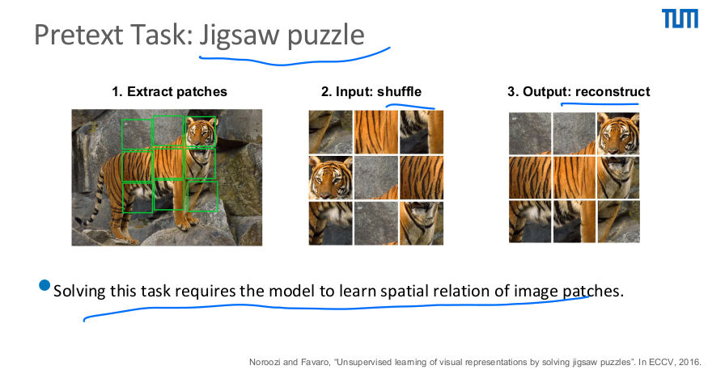
任务被建模成分类问题：每一种排列（permutation）定义一个类。
QUIZ9块的拼图要定义多少个类？
全排列是 \(9! = 362880\) 个，太多了。所以从中挑出64个（彼此差异最大的） 排列组成permutation set，做64分类：
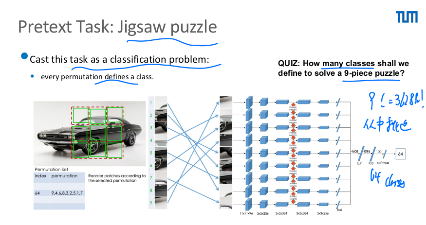
Colorization（Zhang et al., 2016）： 输入灰度图预测颜色，intuition是上对颜色需要语义理解（草是绿的）：
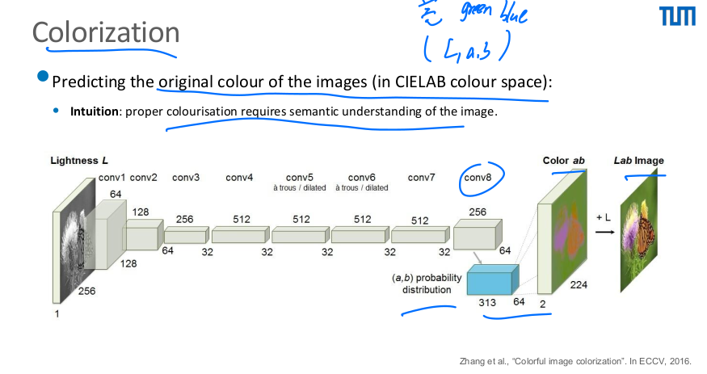
几个nuance：
- 这不是从灰度图回归RGB。因为着色是multimodal的（苹果可以是红的 也可以是绿的），RGB的 \(p(C \mid L)\) 不是一个单峰分布，用MSE回归只会取 各种可能颜色的平均，得到一张灰扑扑的图
- 所以在Lab色彩空间操作：L是perceptual lightness，a、b是两条对立色轴 （green-magenta、blue-yellow，opponent color theory）。选Lab是因为 Lab里的欧氏距离在感知上更有意义（RGB里数值距离相同的两对颜色， 人眼看差别可以差很多）
- 把着色建模成对量化后的 \((a,b)\) 的多项分类问题，而不是回归
这个方法还有个直接的下游应用：给老的黑白照片上色。
SSL on videos：视频比图片多了免费的时间结构。例子：判断一段视频是在 正放还是倒放（arrow of time）。因为要判断时间方向，模型必须理解重力、 因果、摩擦这些物理常识（水往下流、碎片不会自己拼回去）。实现上用两路CNN （输入RGB加optical flow），接一个fwd/bwd分类器。
Pretext tasks的问题：特征质量完全取决于任务设计，模型非常擅长 走捷径（比如靠镜头色差判断patch位置），而且"会拼图"不代表"懂分类"， pretext任务和下游任务经常不对齐。
2.3 Contrastive learning
先recall note 2的metric learning（当时用于ReID）。 triplet loss：
拉近anchor和positive（\(A\)、\(B\)），推远anchor和negative（\(A\)、\(C\)）， margin \(m\) 控制推开多远。但metric learning需要标签来定义谁是正对、 谁是负对。
Contrastive learning就是metric learning的无监督扩展，正负对不再靠标签：
- 对同一张图做data augmentation（裁剪等）得到的两个view是positive pair
- 其他图片统统当negative pairs（很多个）
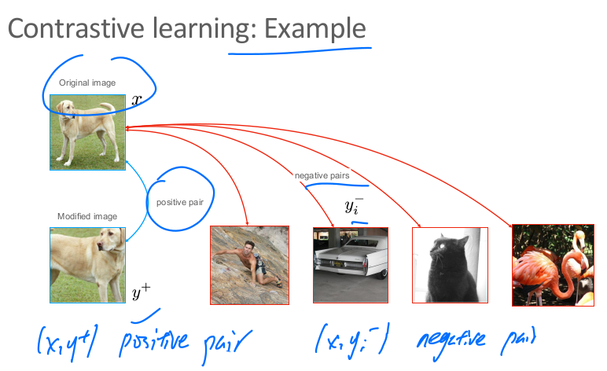
形式化。encoder把每张图变成一个特征向量 \(z_x = f(x) \in \mathbb{R}^d\)， 用cosine similarity度量：
对一组 \(\{x, y^+, \{y_i^-\}_{i=1,\dots,n}\}\) 计算contrastive score（softmax形式）：
损失就是 \(\mathcal{L} = -\log s(x)\)。逐项观察：
- \(s(x) \in (0, 1)\)：接近1表示positive比所有negative都近得多（我们想要的）， 接近0表示有negative比positive还近
- temperature \(\tau\)（超参，通常0.01到1.0）：\(\tau\) 越小softmax越尖锐， 可以理解成一个soft margin，作用类似triplet loss里的 \(m\)
几何直觉。因为特征做了归一化，每个embedding都是高维单位球面上的 一个点。contrastive learning的目标就是把同类的点在球面上聚成cluster （alignment），同时让所有点铺满球面（uniformity） （Wang & Isola, 2020）。聚好之后， 球面上的点就线性可分了，正好对上2.1的理想图景：
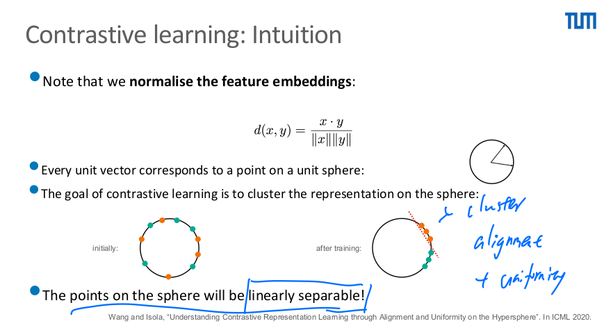
SimCLR（Chen et al., 2020）： 最简洁的实现：
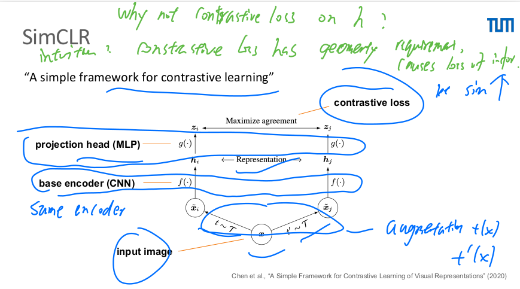
- 同一个encoder \(f(\cdot)\) 处理两个augmented view得到 \(h\)，再过一个 projection head \(g(\cdot)\)（MLP）得到 \(z\)，contrastive loss算在 \(z\) 上
- Quiz: 为什么loss不直接算在 \(h\) 上？ 因为contrastive loss对特征有 几何上的强约束（球面聚类），会挤掉一些信息；让 \(z\) 去承受这个约束， \(h\) 就能保留更完整的信息给下游用
- augmentation的组合至关重要（crop、color jitter、blur等）：
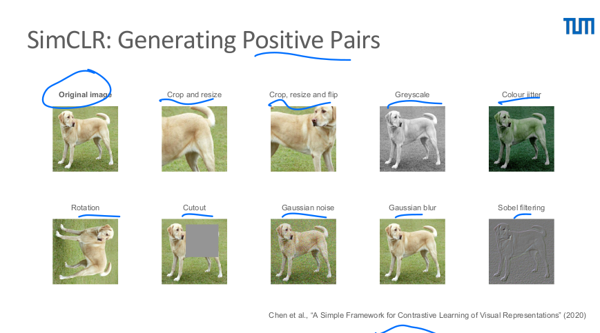
- 最好的结果需要巨大的batch（8192，等于16382个negative pairs）， 因为negatives来自当前batch。为什么需要大batch？直觉：更多的 negative样本降低梯度的方差，训练更稳
MoCo（He et al., 2020）：解决 "要多negatives就要大batch占显存"的问题。对比三种机制：
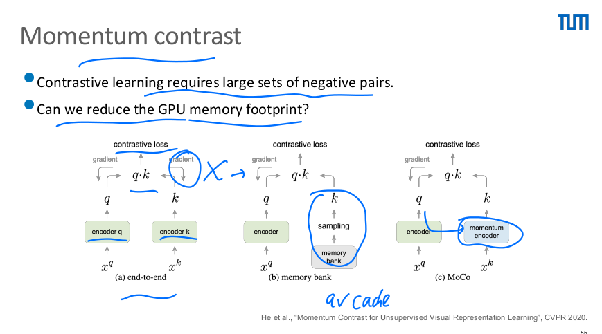
- end-to-end：两个encoder都反向传播，negatives只能来自 当前batch，显存和batch绑死
- memory bank：把历史特征存起来采样当negatives，省显存，但bank里的 特征是很久以前的旧encoder算的，和当前特征不一致
- MoCo：一个queue存最近若干batch的key（FIFO，新batch的key入队、 最老的出队），配一个momentum encoder算key：
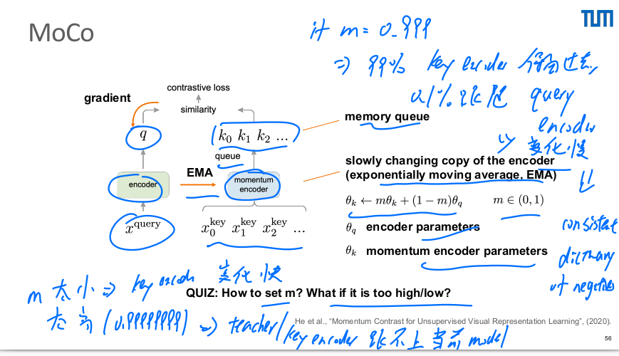
key encoder不做梯度更新，而是query encoder的EMA（指数滑动平均）， 变化很慢，所以queue里不同时刻的key仍然基本一致。
QUIZ\(m\) 怎么设？太大/太小会怎样？
\(m\) 太小的话key encoder变化太快，queue里的key互相不一致，等于回到 memory bank的毛病；太大（比如0.9999999）的话key encoder几乎不动， 跟不上query encoder学到的新特征。实验里 \(m = 0.999\) 附近最好， \(m = 0\) 直接训练失败：
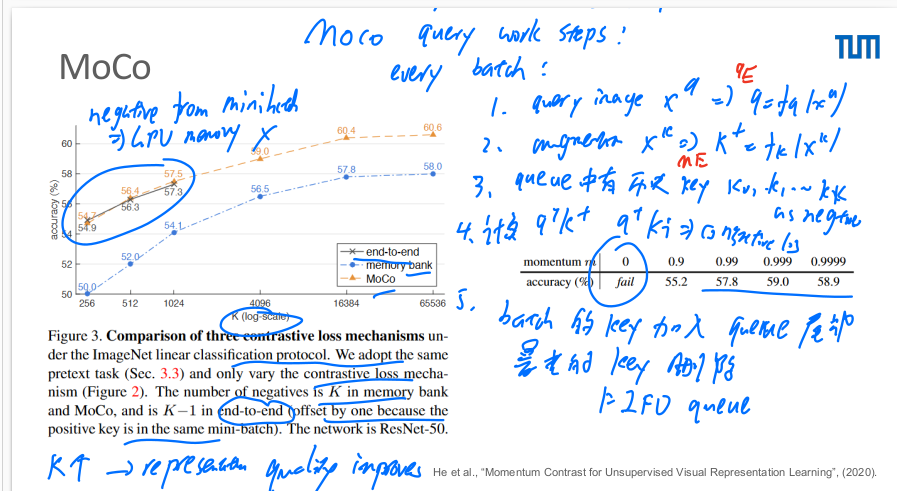
结果图的另一个信息：negatives数量 \(K\) 越大，representation质量越好， 而MoCo的 \(K\) 不受GPU显存限制。
2.4 Non-contrastive learning
下一个问题：能不能连negatives都不要？直接做会collapse：只要求两个 view相似的话，把所有输入都映射到同一个点就是完美解。所以这一族方法的 核心都在怎么防collapse。
DINO（Caron et al., 2021）， 名字是self-distillation with no labels：
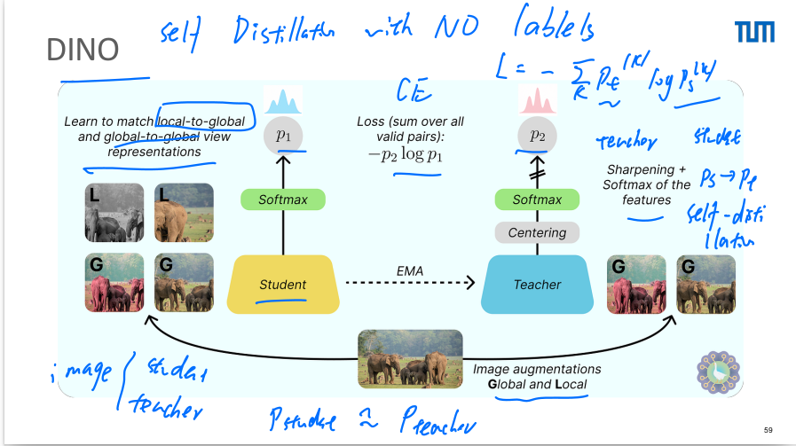
- student和teacher是同一个架构。图片做两组augmentation：global views （大crop）和local views（小crop）。student看所有views， teacher只看global views，student要去匹配teacher的输出分布 （local-to-global：从局部猜整体，逼出语义）
- loss是所有valid pair上的交叉熵 \(-p_t \log p_s\)
- teacher是student的EMA（在MoCo里已经见过，只是换了个名字）， 梯度不穿过teacher（stop-gradient）
- 防collapse靠teacher侧的两个操作互相制衡：centering（减去输出的 moving average，避免某一维独大、所有数据挤进一个prototype）和 sharpening（低temperature，避免输出变成均匀分布）。只用其中一个 都会塌，两个一起用刚好平衡
- 有趣的现象：teacher的表现始终好于student（EMA相当于student的 ensemble），所以student永远有一个更强的老师可以学
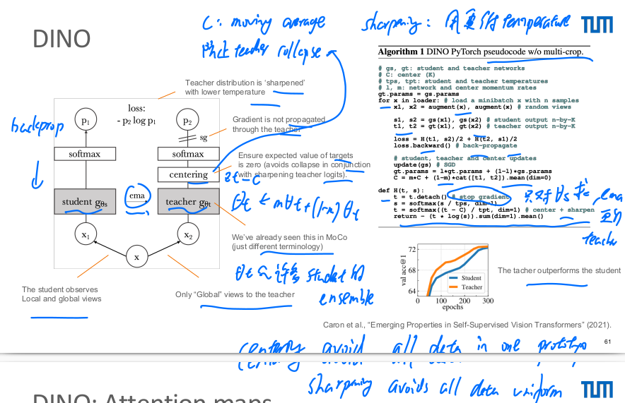
最惊艳的发现：看ViT最后一层[CLS] token的self-attention map， 没有用任何标签，它自己长成了物体的分割图，而且不同的head关注不同的 语义部件：
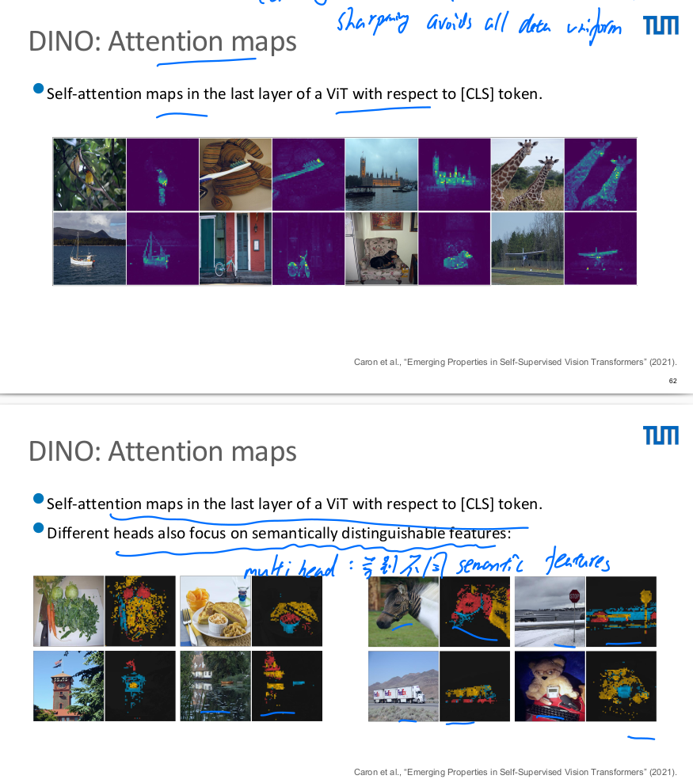
attention map在时间上也很稳定（对视频逐帧算，物体的mask一直跟着物体走）。
DINOv2（Oquab et al., 2023）： 把DINO配方规模化：
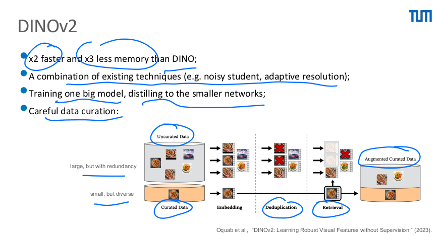
- 比DINO快2倍、省3倍显存；技术上是已有技巧的组合（noisy student、 iBOT式的patch目标、adaptive resolution）
- 先训一个大模型，再蒸馏给小模型
- 关键是data curation：从海量未筛选数据出发，去重，再用一个小而 多样的核心集做retrieval扩充，得到大而干净的训练集
frozen特征直接可用于part segmentation、深度估计、semantic segmentation：
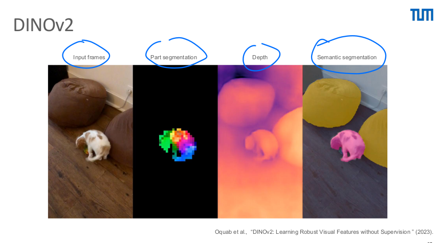
DINOv3（Siméoni et al., 2025）： 继续放大到7B参数、17亿图片。新的训练目标Gram anchoring： 长时间训练后相邻patch的特征会互相污染（dense特征退化），Gram anchoring 把patch之间的相对结构锚住，高分辨率下的feature map干净得多：
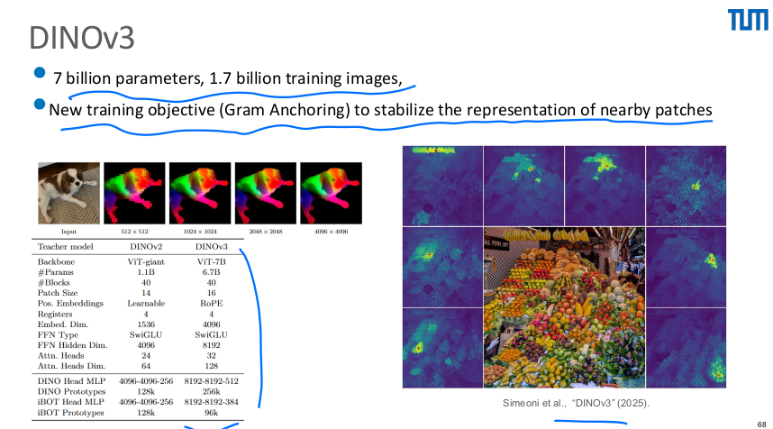
MAE（He et al., 2022）：完全不同的 路线，transformer加重建loss：
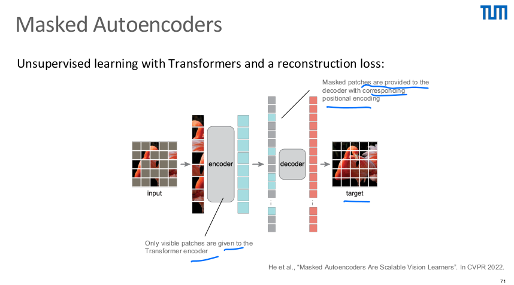
- 随机mask掉大部分patch，encoder只看可见的patch；被mask的位置补上 mask token（带positional encoding）交给一个轻量decoder重建像素
- Remarks（几个重要细节）：
- masking比例要高（75%以上）。因为图像冗余度高、相邻像素强相关， 比例低的话靠插值就能重建，学不到语义
- loss只算被mask的patch（和denoising autoencoder不同）
- 重建目标是per-patch归一化的像素（每个patch减均值除标准差）， 让模型关注结构而不是绝对亮度和对比度
- 为什么有效？原论文说得很含糊（"rich hidden representation"）
- 变体：重建目标换成HoG特征而不是像素 （Wei et al., 2022，HoG就是 note 1里的那个HOG），效果更好
统一的视角：multiview assumption。为什么MAE和contrastive殊途同归？ 因为它们共享同一个假设：任何一个view（crop或者没被mask的部分）都包含 下游任务所需的足够信息，所以 \(f(A) \approx f(B) \approx \mathcal{I}\)。 crop和masking只是制造view的两种方式：
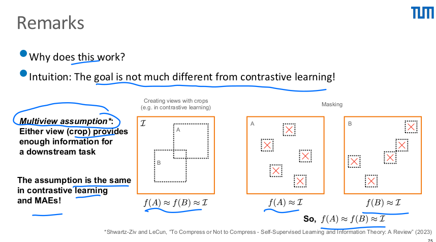
实践上的区别还是有的：contrastive/distillation学invariance， linear probing强；MAE学重建，frozen特征偏低层，但fine-tune之后很强。
2.5 Evaluating SSL models
SSL训练完没有accuracy可看，标准做法是接下游任务（如分类）评估：
- Fine-tuning：全部或最后几层跟着下游任务微调。优点是任务性能最好； 缺点是模型变得task-specific，不能复用给其他任务
- Linear probing：encoder完全冻住，只训练一个新的线性投影。优点是 一个模型配多个线性头就能服务多个任务；缺点是准确率通常低于fine-tune
- k-NN classification：连线性头都不训练。把有标签的数据投影进embedding 空间，测试样本按k个最近邻的类别投票。优点是完全不需要学习； 缺点是预测开销大（\(O(Nd)\)，和标注集大小成线性）
注意这几个协议经常互相不一致（linear probe强不代表fine-tune强）， 读论文对比时要看清楚用的是哪一个。
2.6 Downstream applications
DINO特征里编码了什么？它几乎开箱即用地提供semantic correspondence： 在两张不同的图里（豹和黑猫），同一个语义部位的特征相似度最高，similarity map直接可以拿来配对（Amir et al., 2021）：
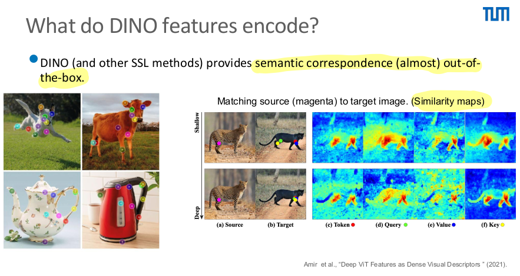
但也有短板：特征缺少几何理解，比如经常分不清左腿和右腿 （语义上它们确实是同一种东西）：
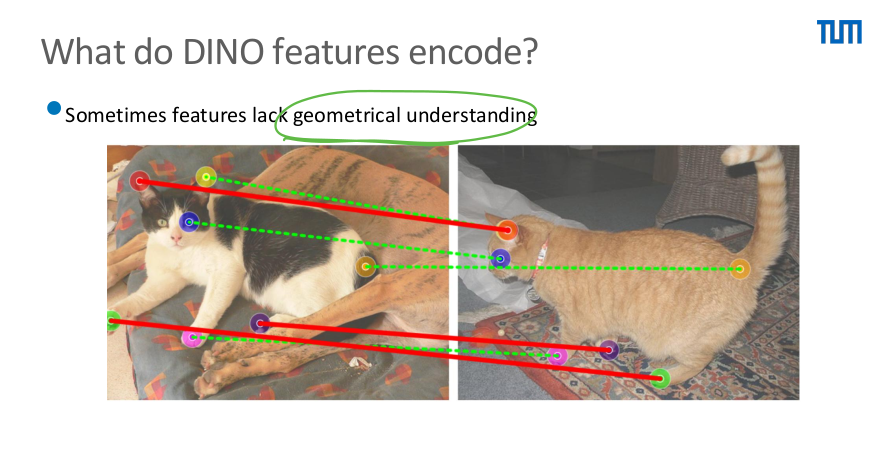
Part co-segmentation：把多张图的deep ViT特征放在一起聚类， 同一个语义部件（不同动物的头、腿）自动聚到一起：
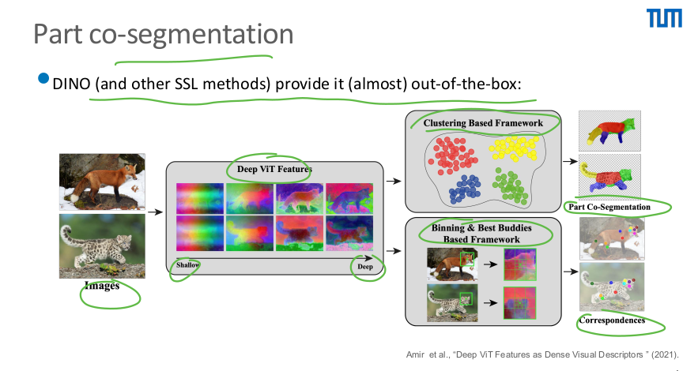
Unsupervised semantic segmentation（STEGO） （Hamilton et al., 2022）：连"stuff"背景 也能聚类，得到完整的semantic segmentation：
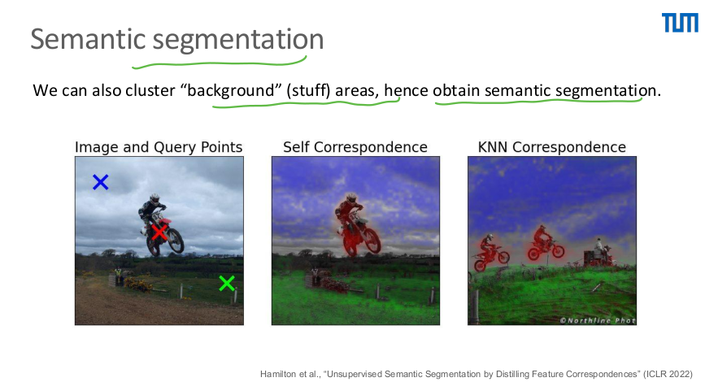
思路：在冻住的DINO特征之上学一个更低维的embedding，让在这个空间里 聚类就能得到semantic mask。设 \(F\) 是原始DINO特征的pixel级cosine相似度， \(S\) 是新embedding的相似度，loss是
\(b\) 是一个阈值超参：\(F_{ij} > b\) 的（原特征认为相似的）pixel对会把 \(S_{ij}\) 往上推，\(F_{ij} < b\) 的往下压。本质是学 \(S\) 去模仿并放大 \(F\) 里已有的 相关性模式：
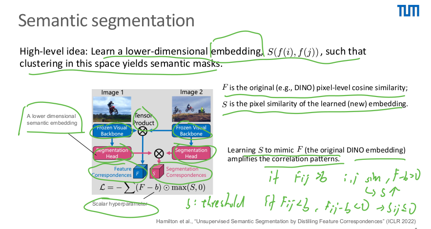
视频里的self-supervision有两类问题：给一段视频，用motion cues把物体 分割出来；给一个视频数据集，学会跟踪。
Segmentation from motion cues （Yang et al., 2019）：idea是 如果object mask是对的，物体的optical flow就无法从周围环境重建出来。 训练两个网络对抗：
- 网络 \(G\)：给图片和flow，预测object mask（前景/背景）
- 网络 \(I\)：给被mask挖掉的flow和完整图片，重建原始的flow
case A（mask不准）：物体的一部分flow漏在mask外面，\(I\) 看得到线索， 重建很容易，说明mask不好：
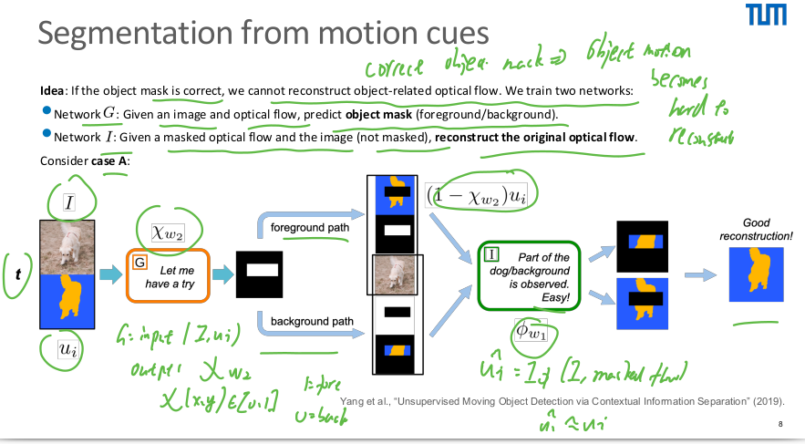
case B（mask准确）：物体的flow被完整挖掉，\(I\) 完全猜不到物体怎么动， 重建失败，说明mask把"一起动的东西"抓全了：
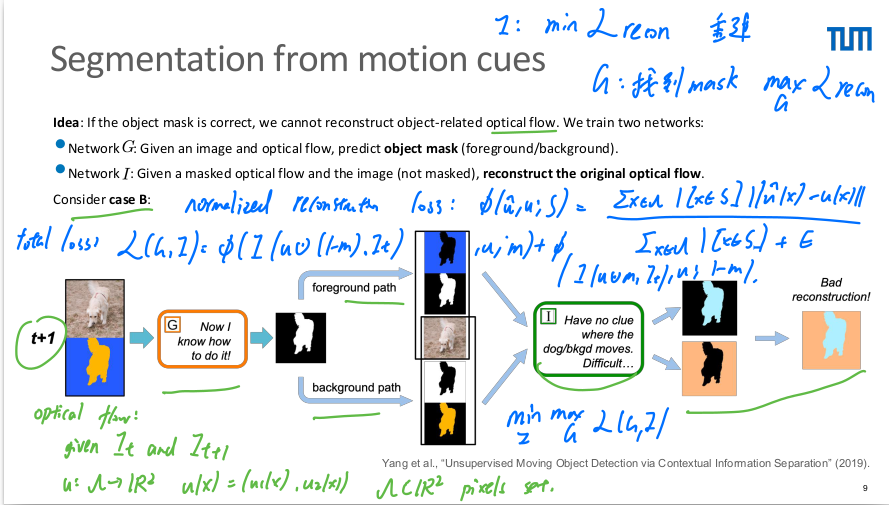
所以训练是个min-max游戏：\(I\) 最小化重建误差，\(G\) 最大化它。 这正是Gestalt的common fate原则（一起动的属于同一个物体）的实现， 完全不需要标签。
Contrastive random walk （Jabri et al., 2020）：学跨帧 correspondence的自监督方法。把视频构造成回文 \(t_1, \dots, t_{N-1}, t_N, t_{N-1}, \dots, t_1\)，把每帧切成patch当图的节点：
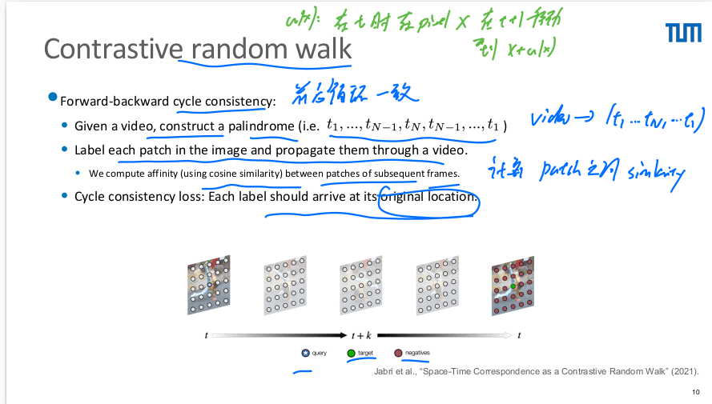
形式化：
- 相邻帧的affinity用学出来的特征算：\(A_{t:t+1} = F_t F_{t+1}^\top\)， \(F_t \in \mathbb{R}^{N \times d}\)
- 给 \(t=0\) 的每个patch一个唯一的one-hot标签 \(L \in \mathbb{R}^{N \times N}\)
- 沿时间向前再向后传播标签：\(L_{t+1} = \text{softmax}(A)\, L_t\)
- cycle consistency：走完一圈回来，每个标签应该回到出发的位置， 在 \(L_T\) 上用cross-entropy（初始标签就是ground truth，免费的）
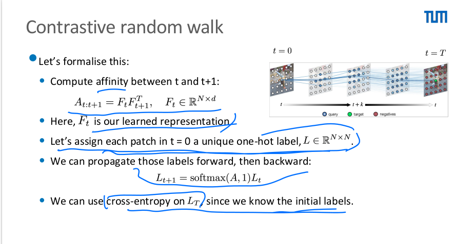
训练时还有个trick叫edge dropout：随机剪掉一些边，逼着模型学出替代的 context路径，相当于强化common fate（单条路径记不住了，只能靠"整个物体 一起动"这种更稳的信号）。学好的特征直接做dense tracking，也就是 note 3里VOS的label propagation：
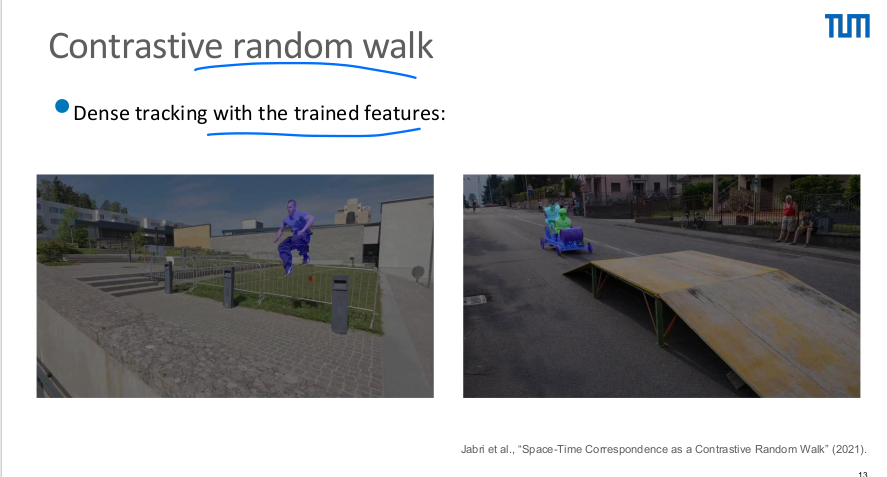
2.7 Conclusion and what came after
课程给的结论（润色版）：unsupervised learning已经主导了研究版图， 我们能用更少的监督训出更准的模型。但代价是巨大的计算资源（几十块 高端GPU起步），而且对数据量的scaling并不理想（性能会饱和）。 open questions：什么才是好的proxy task？计算开销怎么降下来？ 以及最根本的：它为什么work？
课件的additional reading里还有两篇正文没展开的： LOCA（location-aware的自监督， 专门为semantic segmentation设计proxy task）和 Dense Unsupervised Learning for Video Segmentation （Araslanov et al.，无监督的视频分割）。
课件之后的SSL主线（补到今天，不在课件里；和第1章的时间线一样， 按"解决了什么、又留下什么"来串）：
- 2020，BYOL：第一个证明 完全不要negatives也不collapse的方法（online predictor + EMA teacher）， non-contrastive这条线的起点，DINO是它的直接后继
- 2021，CLIP：另一条路线登场。 不用人工标签，但用网络上免费的图文配对做弱监督，4亿对图文训出 zero-shot分类。从此视觉预训练分成两大阵营：纯视觉SSL和语言监督
- 2021，iBOT：把DINO的distillation和 MAE式的masked prediction合流（在线tokenizer上做patch级BERT）， 这套配方后来被DINOv2直接继承
- 2022，data2vec：同一个目标函数 通吃语音、视觉、语言，预测的是latent representation而不是像素， 预示了下一步的方向
- 2023，I-JEPA：LeCun的JEPA路线。 MAE重建像素会把容量浪费在纹理细节上，I-JEPA改成在表示空间里预测 被mask区域的特征，不需要augmentation定义的不变性，也不碰像素
- 2023，SigLIP：把CLIP的softmax对比 loss换成sigmoid，不再需要全局batch归一化，语言监督的scaling变便宜。 SigLIP 2（2025）继续加码
- 2024，AIM：把LLM的自回归 预训练搬到图像上，展示视觉也有类似语言的scaling law
- 2024，V-JEPA：JEPA上视频， 从视频里学feature prediction
- 2024，AM-RADIO：既然CLIP、DINOv2、 SAM各有所长，那就把多个teacher蒸馏进一个backbone（agglomerative distillation），工程上非常实用的路线
- 2025，Web-SSL：把language-free 的SSL规模化到几十亿图片，证明纯视觉SSL在VQA等任务上能追平CLIP系， "视觉预训练必须靠语言"的说法被动摇
- 2025，DINOv3（2.4已讲）： 纯SSL在dense任务的frozen特征上全面领先，语言监督模型反而做不到
- 2025，V-JEPA 2：视频SSL学出的 world model直接支持理解、预测和规划，zero-shot迁移到真实机器人的 操作任务。SSL从"学特征"走向"学世界模型"，正好接到第4章的outlook
- 2026（CVPR）：两个新方向。一是跨模态对齐： A Mixed Diet Makes DINO an Omnivorous Vision Encoder 发现DINOv2的特征在模态之间没对齐（同一场景的RGB和depth图，特征的 cosine相似度跟两张无关图片差不多），用post-training加蒸馏锚定把encoder 变成"杂食"的；二是空间预训练： E-RayZer把 自监督3D重建本身当成proxy task，让预训练直接长出空间理解， SSL和spatial AI在这里正式合流（第4章见）
到2026年：dense视觉任务上纯SSL（DINOv3系）领先， 多模态应用里语言监督（SigLIP系）是默认，工程落地常用蒸馏聚合 （RADIO系）各取所长；2026年主会的关键词是跨模态对齐和空间预训练， 视频和world model成为SSL的主战场。课件conclusion 里的三个open question（好的proxy task、计算开销、为什么work）至今没有 一个被真正解决。
3. Semi-supervised learning
3.1 Setting: limited supervision
第2章的SSL完全不用标签，但现实里我们通常有一点标签：真实数据里有一小块 fine annotation（贵）、一块coarse annotation（比如只有image-level标签）、 大量完全无标签的数据（其中很多是视频）；另外还有synthetic data， 标签几乎免费但外观和真实数据有差距：
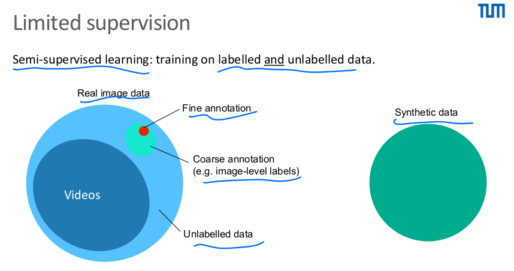
Semi-supervised learning就是同时在labelled和unlabelled数据上训练。 General remarks：
- 这是最实用的场景。想要最高的accuracy，semi-supervised就是正路， 当前SOTA的框架基本都这么做（而不是纯监督）
- Small print：提升不保证（取决于模型、技术和无标签数据本身）； 各种semi-supervised技术往往互补，组合起来效果最好（但框架更复杂）
Loss的一般形式。记labelled数据 \(\{(x_i, y_i)\}_i\)、unlabelled数据 \(\{\hat{x}_i\}_i\)：
监督项照常，整个领域的问题就是无标签的那一项怎么设计。
3.2 Three assumptions
无标签数据能帮上忙，靠的是对数据分布的假设 （van Engelen & Hoos, 2020）：
- Smoothness assumption：两个输入点离得近，标签就应该相同。 而且有传递性：labelled的 \(x_1\) 挨着unlabelled的 \(x_2\)，\(x_2\) 挨着 \(x_3\)，即使 \(x_1\) 和 \(x_3\) 不挨着，我们仍然预期 \(x_3\) 和 \(x_1\) 同标签。 因为传递性，标签可以沿着无标签数据"传播"出去
- Low-density assumption：决策边界应该穿过 \(p(x)\) 低密度的区域。 看图：只用有标签的几个点（+和▽），监督算法画出的边界会从数据团中间 穿过；无标签数据把两团的形状显出来之后，最优边界应该走两团之间的空隙：
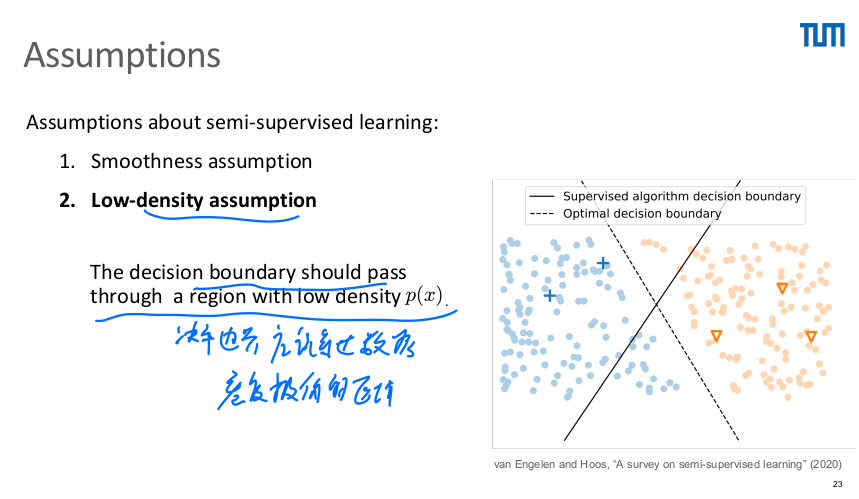
- Manifold assumption：数据来自多个低维流形，同一个流形上的点 共享标签。两个环的例子：欧氏距离上很近的两个点可能属于不同的环， 流形结构比距离更可靠：
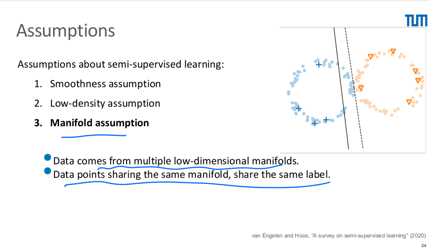
Remark：选哪个假设，取决于我们对数据分布 \(p(x)\) 和类别后验 \(p(y \mid x)\) 之间关系的了解。
3.3 Two taxonomies
领域按两个维度分类：
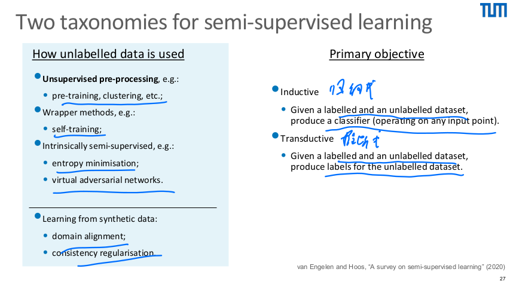
按无标签数据怎么用：
- Unsupervised pre-processing：预训练、聚类等
- Wrapper methods：self-training
- Intrinsically semi-supervised：entropy minimisation、 virtual adversarial networks
- 另算一类的learning from synthetic data：domain alignment、 consistency regularisation
按最终目标：
- Inductive（归纳）：给labelled + unlabelled数据，产出一个分类器， 对任何新输入都能用
- Transductive（直推）：只要求给这批unlabelled数据打上标签， 不要求泛化到新数据
3.4 Unsupervised pre-processing
其实第2章已经讲完了：两个阶段，unsupervised阶段做特征学习 （DINO、MAE），supervised阶段用少量标签做fine-tuning、linear probing 或k-NN。这正是"好的representation只需要很少标签"那张理想图景的落地。
3.5 Self-training
两步：training和pseudo-labelling（伪标签）。用当前模型给无标签数据 打标签，挑出置信度高的预测当作标签（pseudo-label），和真标签混在一起 继续训练同一个分类器，循环往复。
其实我们也已经见过它：note 3的OnAVOS。 online adaptation就是self-training：每一帧上，把当前模型的高置信度预测 当伪标签（红色前景、蓝色背景），加进训练样本池，实时fine-tune模型来适应 物体的外观变化：
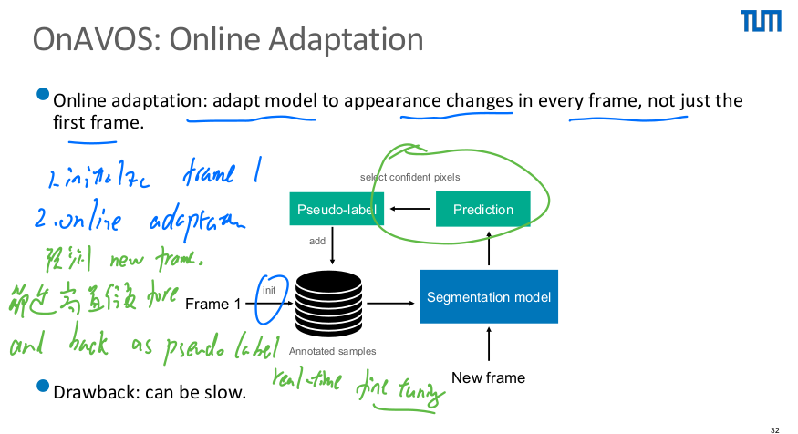
效果（adaptation前后对比）：
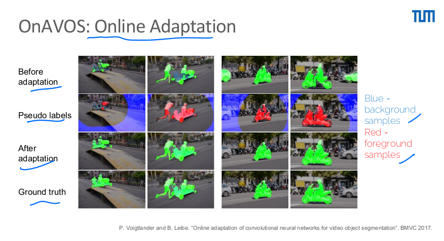
把OnAVOS的图一般化：把"Frame 1"换成任意labelled data、"new frame" 换成任意unlabelled data，这个循环对任何模型、任何任务都成立：
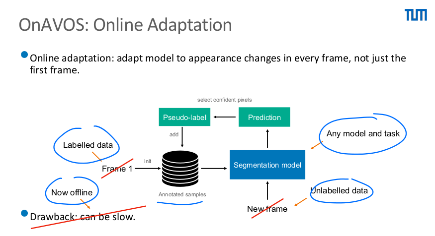
SAM（Kirillov et al., 2023）： SOTA的分割模型就是靠self-training堆出来的。SAM是promptable segmentation： image encoder算出embedding，prompt encoder接受点、框、文本等提示， mask decoder输出若干个带置信度的valid mask：
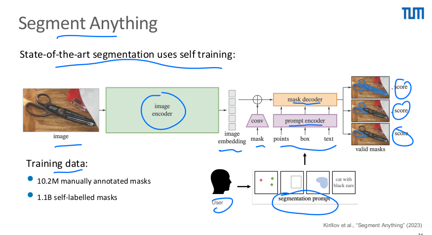
训练数据1120万张图、11亿个mask，而其中99.1%是模型自己标的。 data engine分三个阶段：
- Assisted-manual：专业标注员在模型辅助下标mask，模型重训6次， 得430万mask（12万图）
- Semi-automatic：模型先把有信心的mask填上，标注员只补漏， 重训5次，再得590万mask（共1020万人工mask）
- Fully-automatic：模型对每张新图预测一组mask、估计置信度、 直接当新标签，得到SA-1B数据集（11亿mask）
这就是self-training的工业级形态：模型和数据引擎互相喂养。
SAM 2（Ravi et al., 2024）：扩展到 视频。prompt可以打在任意一帧或多帧上（点、框、mask），模型输出整段 视频的object segmentation。架构上加了memory bank和memory attention （存最近帧和prompt的特征，FIFO队列 + object pointers），当前帧的特征先和 记忆做attention再解码mask。数据引擎同样是annotate和train的循环， 产出SA-V数据集（64.26万masklet、3550万mask、5.09万视频）：
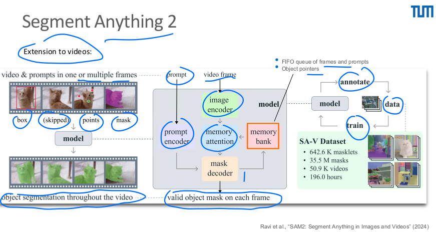
SAM 3（Carion et al., 2025）： 从"分割任何东西"到"分割任何概念"：用名词短语prompt（比如"条纹猫"）， 把图和视频里所有该概念的实例都分出来。数据规模再上一级：400万个 unique phrase、5200万真实mask，外加3800万phrase、14亿mask的合成数据。 data engine引入了MLLM当"AI标注员"和"AI校验员"（生成短语和hard negatives、双重校验标注质量，吞吐接近人类水平）：
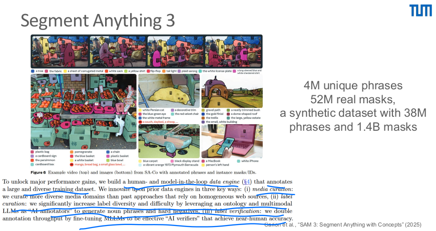
self-training这条线到SAM 3已经完全闭环：人只出最初的种子标注和质检， 数据引擎自己滚雪球。
3.6 Intrinsically semi-supervised
不做两阶段、不打伪标签，把无标签数据直接放进loss。
Entropy minimisation：让模型在无标签数据上的预测分布熵最小化 （预测要么很确定是A、要么很确定是B，不要骑墙）。效果等于把决策边界 从样本密集的地方推开，是low-density assumption的最直接实现。
Virtual adversarial networks （Miyato et al., 2018）：idea是 输入的小扰动不应该改变标签。先看监督情形，最小化
逐项解释：\(q(y \mid x_*)\) 是真实后验（ground-truth标签）；\(r_{\text{adv}}\) 是 最能改变预测的对抗扰动（在半径 \(\epsilon\) 内找让KL散度最大的方向， 这一步里模型参数固定）；外层再优化 \(\theta\) 让扰动后的预测仍然贴近真实 标签。半监督情形只改一处：无标签数据没有 \(q(y \mid x_*)\)，就用模型 当前的估计 \(p(y \mid x_*, \hat{\theta})\) 代替它。
QUIZ这里用的是哪个assumption？
Smoothness：\(x_*\) 和 \(x_* + r\) 离得近，所以标签（预测分布）应该一样。
3.7 Learning from synthetic data
labelled和unlabelled数据可能来自不同的分布，最典型的就是合成数据： 标签几乎免费（游戏引擎渲染，每个像素的语义都是已知的），但外观和真实 世界有domain gap：
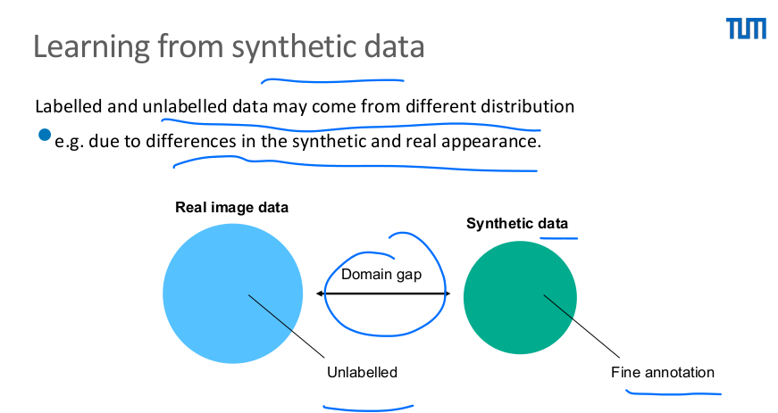
经典例子是拿GTA的画面训练自动驾驶的语义分割 （Richter et al., 2016，Playing for Data）。 可以把它看成semi-supervised的特例：labelled = synthetic， unlabelled = real。这个setting叫Unsupervised Domain Adaptation（UDA）： 训练时用有标签的合成数据加无标签的真实数据，测试时模型要在真实数据上 输出好的预测：
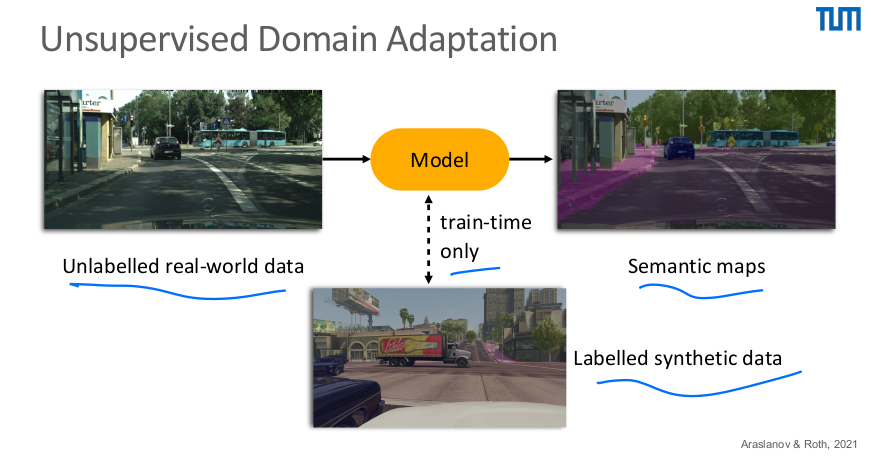
Domain alignment。直接只用合成数据训练会发生什么？两个domain的特征 分布是割裂的：模型在合成特征上画好了cat/dog的边界，真实数据的特征 落在完全另一片区域，全部误分类：
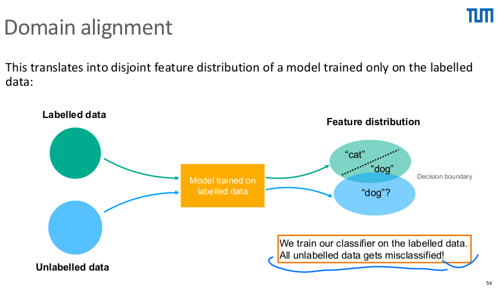
解决办法是把两个特征分布对齐（align），让它们不可区分。可以用GAN： 一个discriminator学着判断一个特征来自哪个domain（合成还是真实）， 主模型同时学两件事，一是把labelled数据分类对，二是学出一种 让discriminator分不出来源的特征表示。discriminator分不出来的时候， 两个domain的特征就混到一起了，合成数据上学的分类边界对真实数据也适用：
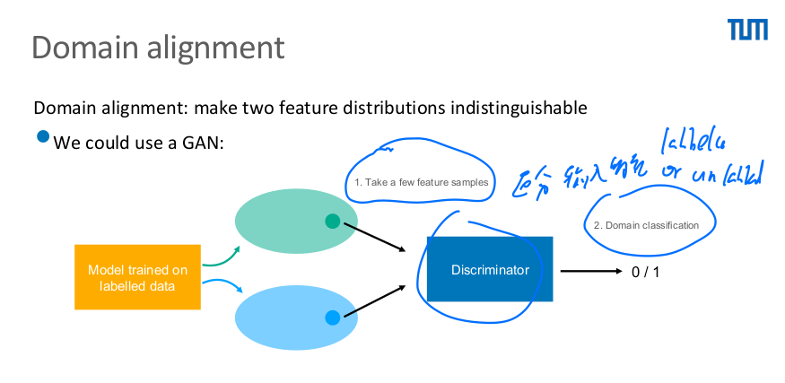
3.8 Consistency regularisation
UDA也可以完全用self-training做，例子是 Araslanov & Roth, 2021的 self-supervised augmentation consistency框架：
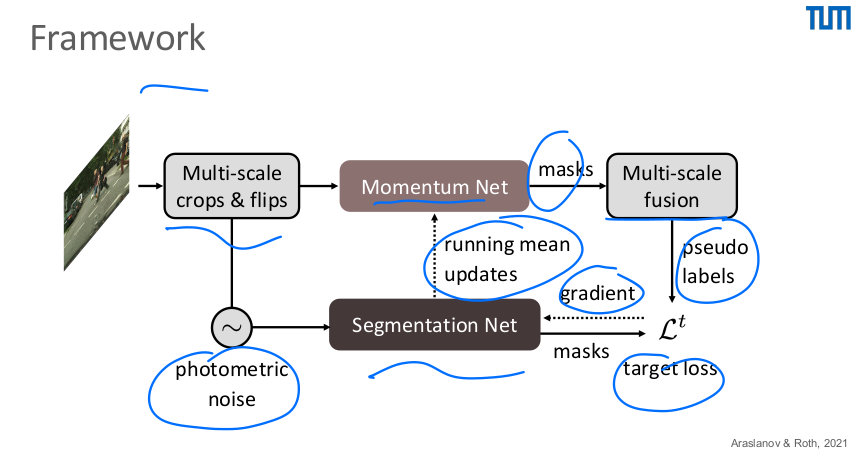
- 又见EMA：一个momentum net（segmentation net的滑动平均，DINO/MoCo的 老朋友）负责产伪标签
- momentum net看的是干净的multi-scale crops和flips，多尺度预测融合 （相当于把test-time augmentation搬到训练时在线做）之后生成pseudo-labels：
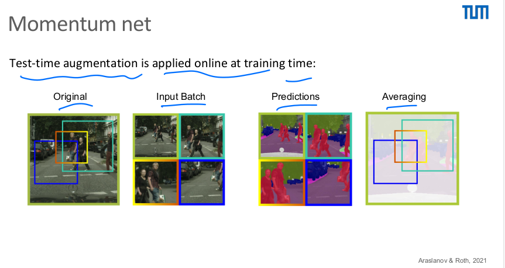
- student（segmentation net）看的是加了photometric noise的同一张图， 用momentum net的伪标签算target loss
- 这就是consistency regularisation：同一张图的不同增强版本，预测必须 一致。慢速的teacher提供稳定目标，快速的student在扰动下向它对齐， 模型逐渐把合成数据学到的知识迁移到真实domain
和3.2呼应：consistency regularisation本质上还是smoothness assumption （增强不改变语义，预测就不该变）。
4. Outlook: from SSL to spatial intelligence
课程最后跳出技术细节，聊了聊这一切通向哪里。
数据瓶颈。Ilya Sutskever在NeurIPS 2024说"pre-training as we know it will end"：算力还在涨（更好的硬件、算法、更大的集群），但数据不涨了， 互联网只有一个，它是"AI的化石燃料"。出路有二：一是新的训练范式和更细 粒度、更高质量的数据；二是互联网数据只是冰山一角，水面下是来自万亿传感器 的真实物理世界的"dark data"：
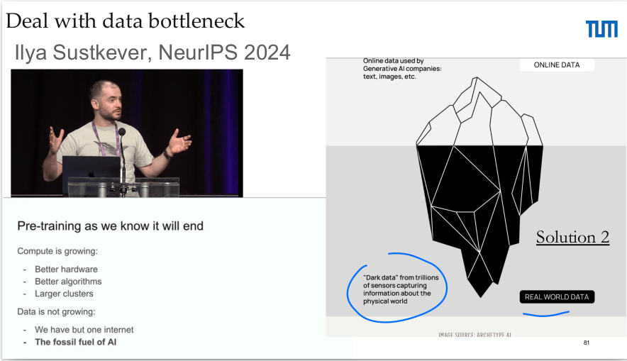
这正好回扣本章：SSL和semi-supervised就是"不靠人工标注消化海量数据"的 技术储备。
生成模型还不懂几何。一个有意思的检验 （Sarkar et al., 2024， Shadows Don't Lie and Lines Can't Bend!）：看起来照片级真实的生成图像， 影子的方向互相矛盾、直线消失点不汇聚，也就是说模型学会了纹理和风格， 还没学会projective geometry：
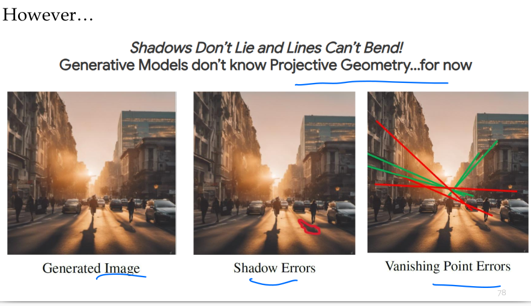
Spatial intelligence是下一个前沿。Fei-Fei Li在 From Words to Worlds 里的判断：MLLM在估计距离、朝向、大小上勉强好于瞎猜，不会走迷宫、不会 预测基本物理，AI生成的视频几秒后就失去连贯性。她的结论是没有spatial intelligence，真正智能的机器就不完整。学界也在把2D理解推向3D认知， world model的survey把这个领域拆成3D表示（NeRF、3DGS、点云、occupancy） 加世界知识两大支柱，往上长出场景生成、空间推理、空间交互三种能力， 应用落在Embodied AI、自动驾驶、数字孪生：
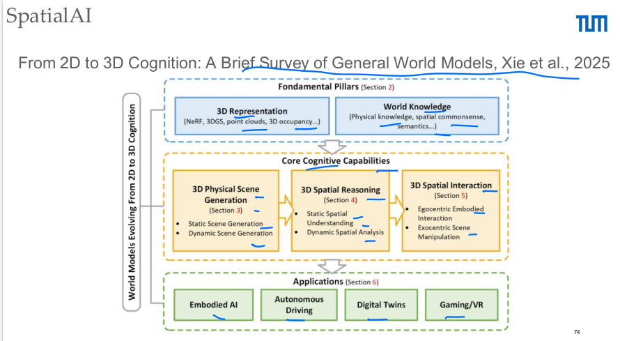
从SSL到spatial AI：研究主线（课件之外，我把这条路补到2026）：
- 2020，NeRF：用一个神经网络隐式地 表示3D场景，photorealistic的novel view synthesis。3D表示的第一次革命， 但训练和渲染都慢
- 2023，3D Gaussian Splatting： 用显式的高斯点云替代隐式field，实时渲染，第二次革命。NeRF和3DGS 就是world model survey里"3D representation"支柱的两大主角
- 2023，DreamerV3：world model路线的 里程碑，agent在学出来的latent世界模型里"想象"训练，第一个从零采钻石 （Minecraft）的通用算法
- 2024，DUSt3R：3D重建不再需要标定 和已知位姿，两张图直接回归pointmap，geometry foundation model的开端； 同年Depth Anything用大规模无标签 数据（第2、3章的精神）蒸馏出通用深度估计
- 2024，Genie：从无标签游戏视频学出 可交互的生成环境，连"action"都是自监督学出来的latent action
- 2025，VGGT：一个纯前馈transformer 同时输出相机位姿、深度、点图和轨迹，CVPR 2025 best paper。第1章的故事 重演：transformer把3D几何任务也改写成了一次前向传播
- 2025，Physical AI平台化：Cosmos 做"world foundation model平台"，用生成的物理世界视频当机器人和自动驾驶 的合成数据引擎（第3章learning from synthetic data的工业级形态）； π0这类VLA模型把视觉语言预训练接上 机器人action；V-JEPA 2（2.7）用视频SSL直接做规划
- 2025下半年到2026，世界模型军备竞赛：DeepMind的 Genie 3 实时（24fps）生成可交互的世界、有分钟级的一致性；Fei-Fei Li的World Labs 发布Marble，从文本或图片生成可行走、 可编辑、可导出的3D世界并商用；LeCun离开Meta创办AMI Labs拿了 10亿美元级的种子轮专做world models。行业在用钱投票
- 2026（CVPR）：E-RayZer（2.7提过）把自监督3D重建做成空间预训练 本身。第2章的SSL和这一章的spatial AI，在这里正式汇成一条河
Embodiment。从Descartes的身心二元论，到心理学的embodied cognition （运动和语言、记忆的关联），再到今天CV/AI研究者（LeCun、Malik）押注的 Embodied AI：感知、世界模型、行动构成 闭环，智能在和物理世界的交互里长出来：
课件的收束句：这些自监督、半监督的技术从来不是最终目标，它们是让 learning和searching更快的手段。而按照Sutton的 Bitter Lesson， 70年AI研究最大的教训就是：能随算力scale的通用方法（search和learning） 最终总是赢。SSL让learning摆脱了标注的束缚，能吃下真实世界的海量数据， 这就是它在这条主线上的位置。
References
Transformers
- Vaswani et al. Attention Is All You Need. NeurIPS 2017.
- Ba et al. Layer Normalization. arXiv 2016.
- Dosovitskiy et al. An Image is Worth 16x16 Words (ViT). ICLR 2021.
- Liu et al. Swin Transformer. ICCV 2021.
- Carion et al. End-to-End Object Detection with Transformers (DETR). ECCV 2020.
- Rezatofighi et al. Generalized Intersection over Union (GIoU). CVPR 2019.
- Zhu et al. Deformable DETR. ICLR 2021.
- Cheng et al. Per-Pixel Classification is Not All You Need (MaskFormer). NeurIPS 2021.
- Cheng et al. Masked-attention Mask Transformer (Mask2Former). CVPR 2022.
- Polo Club. Transformer Explainer (interactive visualization).
Self-supervised learning
- Gidaris et al. Unsupervised Representation Learning by Predicting Image Rotations. ICLR 2018.
- Noroozi & Favaro. Solving Jigsaw Puzzles. ECCV 2016.
- Zhang et al. Colorful Image Colorization. ECCV 2016.
- Chen et al. A Simple Framework for Contrastive Learning (SimCLR). ICML 2020.
- He et al. Momentum Contrast (MoCo). CVPR 2020.
- Caron et al. Emerging Properties in Self-Supervised Vision Transformers (DINO). ICCV 2021.
- Oquab et al. DINOv2. arXiv 2023.
- Siméoni et al. DINOv3. arXiv 2025.
- He et al. Masked Autoencoders Are Scalable Vision Learners (MAE). CVPR 2022.
- Jabri et al. Space-Time Correspondence as a Contrastive Random Walk. NeurIPS 2020.
- Wang & Isola. Alignment and Uniformity on the Hypersphere. ICML 2020.
- Wei et al. Masked Feature Prediction for Self-Supervised Visual Pre-Training. CVPR 2022.
- Wei et al. Learning and Using the Arrow of Time. CVPR 2018.
- Amir et al. Deep ViT Features as Dense Visual Descriptors. 2021.
- Hamilton et al. Unsupervised Semantic Segmentation by Distilling Feature Correspondences (STEGO). ICLR 2022.
- Yang et al. Unsupervised Moving Object Detection via Contextual Information Separation. CVPR 2019.
- Shwartz-Ziv & LeCun. To Compress or Not to Compress — SSL and Information Theory: A Review. 2023.
Semi-supervised learning
- Kirillov et al. Segment Anything (SAM). ICCV 2023.
- Ravi et al. SAM 2: Segment Anything in Images and Videos. arXiv 2024.
- Carion et al. SAM 3: Segment Anything with Concepts. arXiv 2025.
- Miyato et al. Virtual Adversarial Training. TPAMI 2018.
- van Engelen & Hoos. A Survey on Semi-Supervised Learning. Machine Learning 2020.
- Voigtlaender & Leibe. Online Adaptation of Convolutional Neural Networks for VOS (OnAVOS). BMVC 2017.
- Richter et al. Playing for Data: Ground Truth from Computer Games. ECCV 2016.
- Araslanov & Roth. Self-Supervised Augmentation Consistency for Adapting Semantic Segmentation. CVPR 2021.
Outlook
- Sarkar et al. Shadows Don't Lie and Lines Can't Bend! Generative Models Don't Know Projective Geometry. CVPR 2024.
- Fei-Fei Li. From Words to Worlds: Spatial Intelligence is AI's Next Frontier. 2025.
- Embodied AI Agents: Modeling the World. 2025.
- Sutton. The Bitter Lesson. 2019.
- Mildenhall et al. NeRF: Representing Scenes as Neural Radiance Fields. ECCV 2020.
- Kerbl et al. 3D Gaussian Splatting for Real-Time Radiance Field Rendering. SIGGRAPH 2023.
- Hafner et al. Mastering Diverse Domains through World Models (DreamerV3). 2023.
- Wang et al. DUSt3R: Geometric 3D Vision Made Easy. CVPR 2024.
- Yang et al. Depth Anything. CVPR 2024.
- Bruce et al. Genie: Generative Interactive Environments. ICML 2024.
- Wang et al. VGGT: Visual Geometry Grounded Transformer. CVPR 2025 (best paper).
- NVIDIA. Cosmos World Foundation Model Platform for Physical AI. 2025.
- Black et al. π0: A Vision-Language-Action Flow Model. 2024.
- Kabra et al. A Mixed Diet Makes DINO an Omnivorous Vision Encoder. CVPR 2026.
Comments